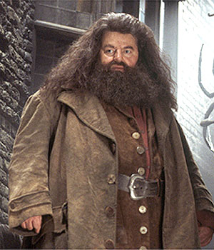

user-name
Rubeus Hagrid

Professor Rubeus Hagrid was an English half-giant wizard, son
of Mr Hagrid and the giantess Fridwulfa, and elder half-brother of
the giant Grawp. Hagrid stood at eleven feet, six inches tall.
Hagrid attended Hogwarts School of Witchcraft and Wizardry in 1940
and was sorted into Gryffindor house. In Hagrid's third year, he was
framed by Tom Riddle for the crime of opening the Chamber of Secrets and using his
pet Acromantula to attack several Muggle-born students and eventually killing one of them.
Though Hagrid's wand was snapped and he was expelled, he was trained as gamekeeper
of Hogwarts and allowed to live on the school grounds at the request of Albus Dumbledore.
In 1991, Hagrid was given the task of reintroducing Harry Potter to the
wizarding world. In 1993, Hagrid would assume the post of Care of Magical
Creatures professor after the retirement of Professor Silvanus Kettleburn.
As a member of both the original and the reinstated Order of the Phoenix, Hagrid
fought in several battles of the First and the Second Wizarding Wars, including the
Battle of Hogwarts in 1998.
It can be assumed that Hagrid kept in contact with the trio after the war.
By 2017 he was still living, and presumably still teaching and tending to his
gamekeeping duties at Hogwarts. When Harry's son, Albus Severus, started school
he invited him for tea, just as Hagrid had done for his father and his friends
Ron Weasley and Hermione Granger.
- House : Gryffindor
- WAND : 16", oak, unknown core